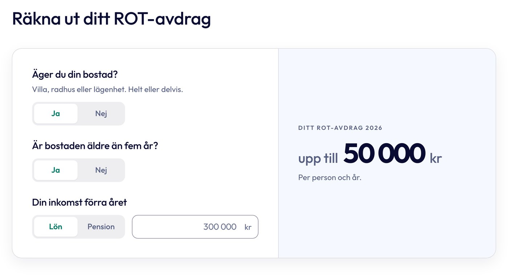
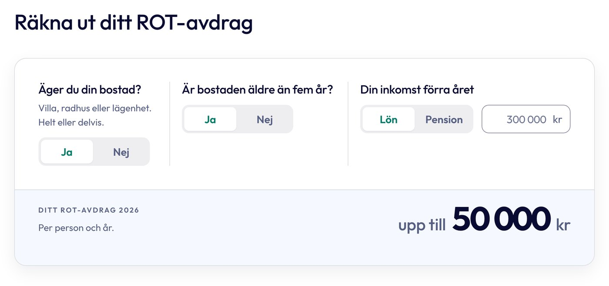
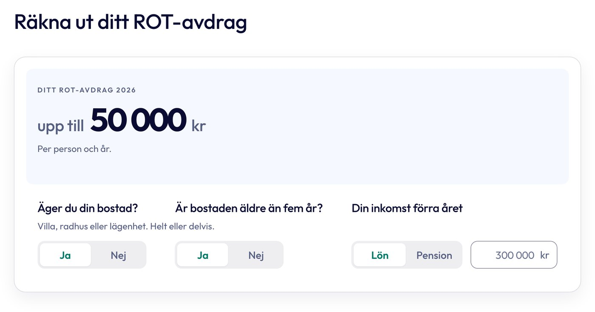

1. Två spalter
Frågorna till vänster, resultatet till höger.
Samma tre frågor och samma logik. Det som skiljer är layouten. Varje version finns för ROT och för grön teknik.

Frågorna till vänster, resultatet till höger.

Frågorna sida vid sida, resultatet som ett lågt band under.

Resultatet överst, frågorna på en rad under.